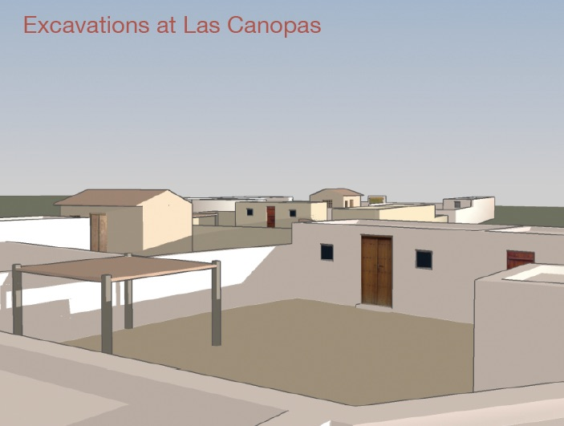

<!DOCTYPE html>
<html>
<head>
    <meta charset='utf-8' />
    <title>Tour Map</title>
    <meta name='viewport' content='initial-scale=1,maximum-scale=1,user-scalable=no' />
    <script src='https://api.tiles.mapbox.com/mapbox-gl-js/v0.46.0/mapbox-gl.js'></script>
    <link href='https://api.tiles.mapbox.com/mapbox-gl-js/v0.46.0/mapbox-gl.css' rel='stylesheet' />
    <style>
        body { margin:0; padding:0; }
        #map { position:absolute; top:0; bottom:0; width:100%; }
    </style>
</head>
<body>

<style>

.map {
    position: absolute;
    top: 0;
    bottom: 0;
    width: 100%;
}

.mapboxgl-ctrl-geolocate {
  display: none !important;
}

.mapboxgl-popup-content {
  padding: 0;
  border: 3px solid #AF564D;
  display: flex;
  align-items: center;
  flex-direction: column;
}

.mapboxgl-popup-close-button {
    font-size: 30px;
    font-weight: 100;
}

/* .mapboxgl-popup-close-button {
    position: absolute;
    right: -16px;
    top: -16px;
    border: 0;
    border-radius: 20px;
    cursor: pointer;
    background-color: white;
    margin: 4px;
    height: 30px;
    min-height: 30px;
    width: 30px;
    min-width: 30px;
    font-size: 20px;
    border: 1px solid #AAA;
    display: flex;
    align-items: center;
    justify-content: center;
}

.mapboxgl-popup-close-button:hover {
    background-color: #EFEFEF;
    border: 1px solid #999;
} */

.popup-tour-img {
  width: 400px;
}

.popup-tour-start {
    position: absolute;
    bottom: 10px;
    border-radius: 5px;
    padding: 8px;
    border: 1px solid #777;
    background-color: white;
    font-size: 16px;
}

.popup-tour-start:hover {
    background-color: #EEE;
}

.popup-tour-start:active {
    background-color: #CCC;
}

.mapboxgl-popup-anchor-bottom .mapboxgl-popup-tip {
    border-top-color: #AF564D !important;
}

.mapboxgl-popup-anchor-top .mapboxgl-popup-tip {
    border-bottom-color: #AF564D !important;
}

.mapboxgl-popup-anchor-left .mapboxgl-popup-tip {
    border-right-color: #AF564D !important;
}

.mapboxgl-popup-anchor-right .mapboxgl-popup-tip {
    border-left-color: #AF564D !important;
}

</style>

<div id='before' class='map'></div>

<script>
mapboxgl.accessToken = 'pk.eyJ1IjoidHdlbGNoIiwiYSI6ImNqYzVxYTJ6NTF2NWUyeHBmNjcwdWwxY28ifQ.ug4rD1lc-yvGduyTkO18UA';
map = new mapboxgl.Map({
    container: 'before',
    style: 'mapbox://styles/twelch/cjkyf0iql4zfj2rkh5ak8472t',
		center: [-112.0000990, 33.428996],
    zoom: 11.2,
    maxZoom: 15
});

beforeGeo = new mapboxgl.GeolocateControl({
    displayControlsDefault: false,  
    positionOptions: {
        enableHighAccuracy: true
    },
    trackUserLocation: true
})
map.addControl(beforeGeo);

map.on('load', function() {
    setTimeout(function() {
      map.fitBounds([
        [-112.17, 33.26],
        [-111.77, 33.51]
      ],{
          duration: 0
      });
    }, 0);

    // When a click event occurs on a feature in the places layer, open a popup at the
    // location of the feature, with description HTML from its properties.
    map.on('click', 'hohokam-ar-points', function (e) {
        var coordinates = e.features[0].geometry.coordinates.slice();
        var description = '<button onClick="window.postMessage(\'startTour\', \'*\');" class="popup-tour-start">Start Tour</button>';

        // Ensure that if the map is zoomed out such that multiple
        // copies of the feature are visible, the popup appears
        // over the copy being pointed to.
        while (Math.abs(e.lngLat.lng - coordinates[0]) > 180) {
            coordinates[0] += e.lngLat.lng > coordinates[0] ? 360 : -360;
        }

        var markerHeight = 10, markerRadius = 0, linearOffset = 0;
        var popupOffsets = {
            'top': [0, 0],
            'top-left': [0,0],
            'top-right': [0,0],
            'bottom': [0, -markerHeight],
            'bottom-left': [linearOffset, (markerHeight - markerRadius + linearOffset) * -1],
            'bottom-right': [-linearOffset, (markerHeight - markerRadius + linearOffset) * -1],
            'left': [markerRadius, (markerHeight - markerRadius) * -1],
            'right': [-markerRadius, (markerHeight - markerRadius) * -1]
        };

        new mapboxgl.Popup({offset: popupOffsets})
            .setLngLat(coordinates)
            .setHTML(description)
            .addTo(map);
    });

    // Change the cursor to a pointer when the mouse is over the places layer.
    map.on('mouseenter', 'hohokam-ar-points', function () {
        map.getCanvas().style.cursor = 'pointer';
    });

    // Change it back to a pointer when it leaves.
    map.on('mouseleave', 'hohokam-ar-points', function () {
        map.getCanvas().style.cursor = '';
    });
})

</script>

</body>
</html>